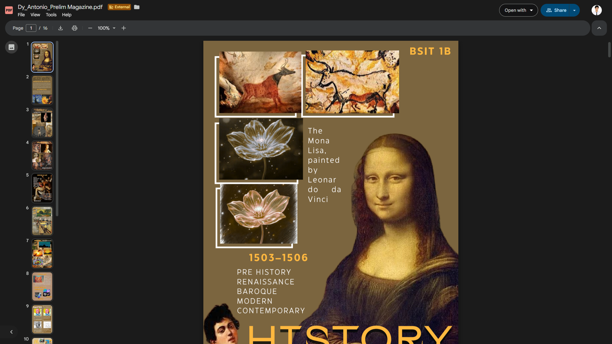
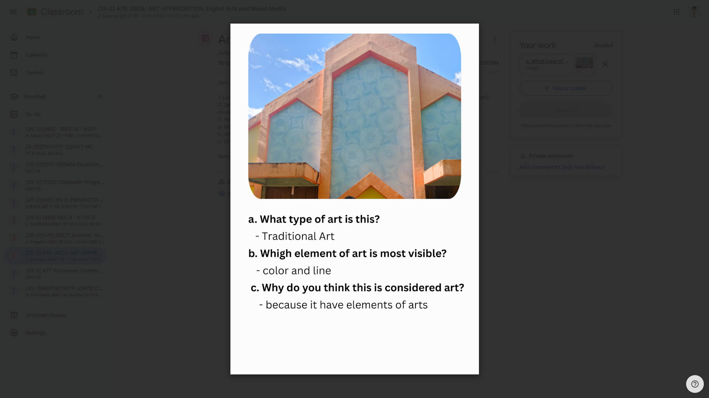
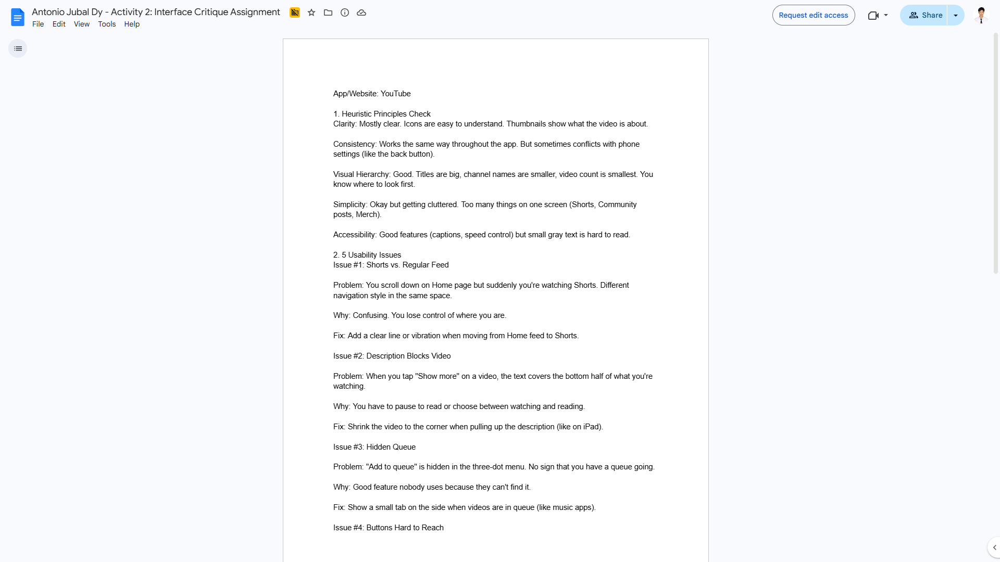
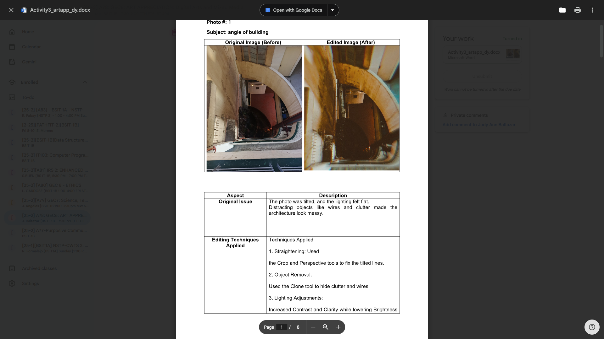
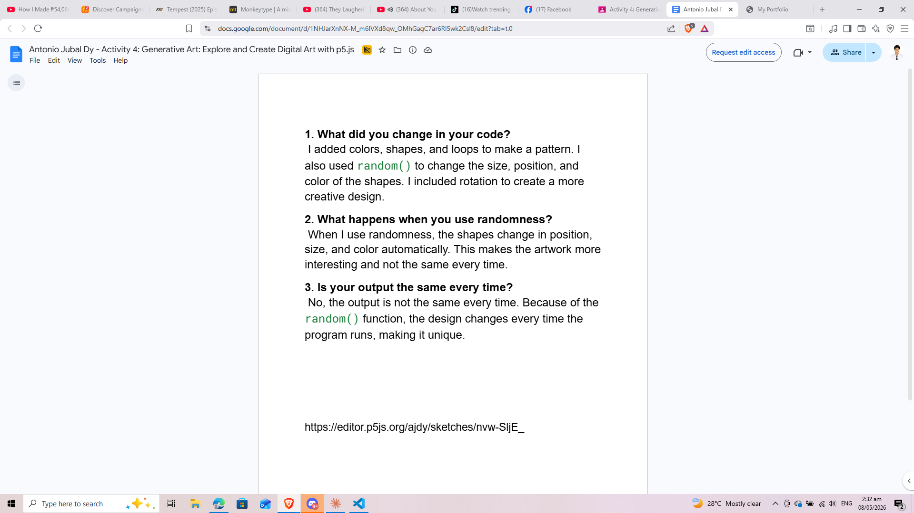
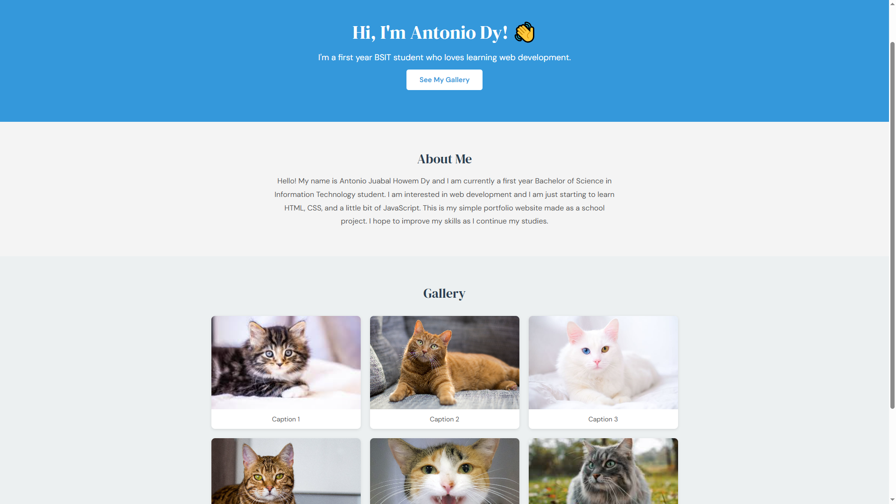
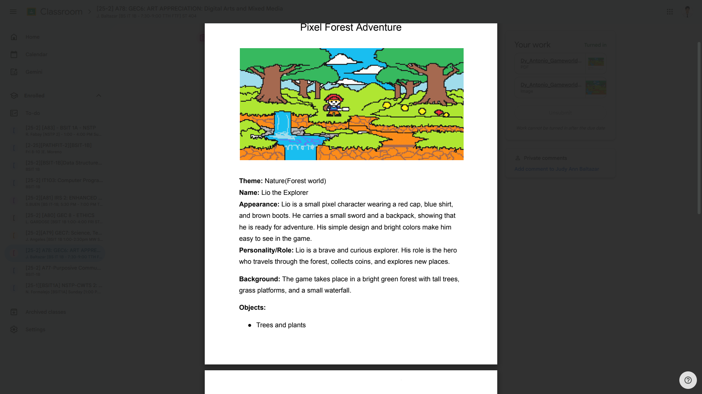
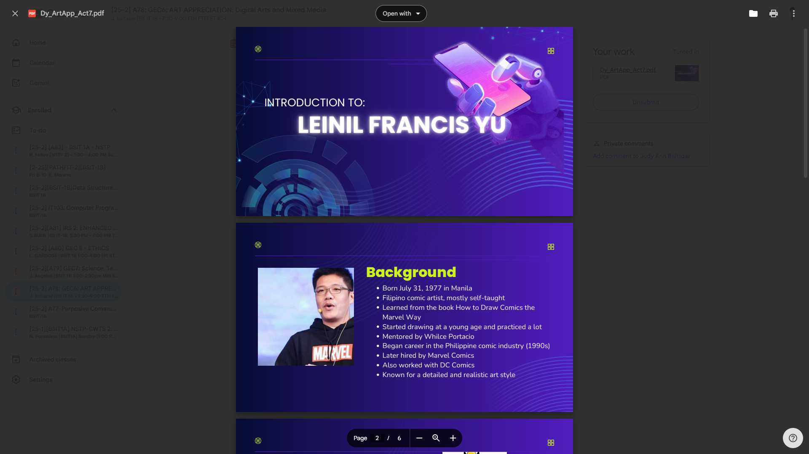
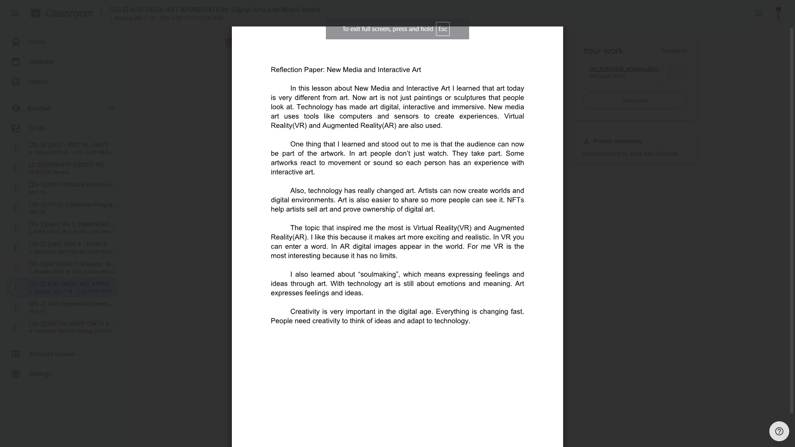

Course Portfolio — A.Y. 2025–2026

Designing this digital magazine on art history allowed me to explore how different eras, from Prehistory to the Contemporary period, have shaped our visual culture. By organizing iconic works like the Mona Lisa alongside cave paintings and modern art, I practiced layout design and information hierarchy to tell a cohesive story of artistic evolution. This project deepened my appreciation for how the techniques and philosophies of the past continue to influence the digital and fine arts of today.

One challenge was identifying the most visible elements of art in the image. I analyzed the structure carefully and focused on the patterns, outlines, and color harmony shown in the design.

In this activity, I analyzed the design and usability of YouTube’s interface. I learned how layout, navigation, and visual hierarchy affect the user experience.

This activity taught me how to identify and fix visual flaws like tilted lines and distracting clutter through professional editing techniques. I learned that adjusting contrast and clarity can transform a flat image into a more focused and cinematic architectural portrait. Ultimately, the process showed me how technology can be used to refine a photo's composition while maintaining the integrity of the subject.

This activity explored the intersection of coding and art by using p5.js to create dynamic, generative designs. By incorporating loops and the random() function, I learned how to move away from static images toward artwork that evolves and changes every time the program runs. This process highlighted how small changes in code can lead to unpredictable and unique visual outcomes, making the creative process feel more like a collaboration between the programmer and the computer.

Building this simple portfolio website allowed me to apply my early knowledge of HTML and CSS to create a functional and organized digital space. I learned how to structure essential web elements like a navigation header, an "About Me" section, and a responsive image gallery to present information clearly. This activity reinforced the importance of layout and design in web development, serving as a practical foundation for my journey into more complex coding.

Creating this pixel art world helped me understand how to build a cohesive visual narrative using simple shapes and a bright color palette. By designing "Lio the Explorer" and his environment, I practiced character development and environmental storytelling, ensuring that the background and objects supported the overall adventure theme. This activity showed me how pixel art can effectively convey personality and mood, even within a limited digital format.

Researching the life and career of Leinil Francis Yu taught me the importance of self-taught dedication and the global impact of Filipino talent in the comic book industry. By creating this presentation, I practiced organizing biographical information and visual elements to highlight his journey from the local industry to Marvel and DC Comics. This activity helped me appreciate how a specific artistic style, like Yu’s detailed and realistic approach, can define a professional career and inspire aspiring artists.

In this lesson on New Media and Interactive Art, I discovered how technology has transformed art from a static experience into something digital, interactive, and immersive. I was particularly inspired by how Virtual Reality (VR) and Augmented Reality (AR) allow the audience to become an active part of the artwork rather than just passive observers. This activity also introduced me to the concept of "soulmaking," which reminded me that even in the digital age, art remains a powerful way to express deep feelings and personal meaning.
This project visualizes the overwhelming influence of social media on our daily lives and how it shapes human interaction. By placing figures both inside and outside the phone screen, the design highlights the blurring lines between our digital identities and reality. This activity taught me how to use bold colors and symbolic imagery to convey the idea that while technology connects us, it also deeply occupies our attention and social environment.